Omar Daniel
Leon-Alvarado¹²; J. Angel
Soto-Centeno²
¹ Department of Earth and Environmental Science, Rutgers University-Newark, NJ, USA.
² Department of Mammalogy, American Museum of Natural History, New
York City, NY, USA.
0. The Shiny App
A Shiny app is an interactive web application built in R. It allows users to explore data, run analyses, change parameters, and visualize results without writing code directly in the console. In vilma, the Shiny app provides a graphical interface to access the main functions of the package, making spatial phylogenetic diversity analyses easier for users who prefer an interactive workflow.
1. vilma Shiny-app
The vilma package includes a Shiny app that provides an
interactive interface for running the main analyses available in the
package. The app was designed to make spatial phylogenetic diversity
analyses more accessible, especially for users who may not be familiar
with R coding. Its workflow is organized into a clear, step-by-step
structure, guiding users from data preparation to index calculation,
visualization, and export of results. This design helps reduce common
errors and makes the analytical process easier to follow. To promote
reproducibility, the app also records the functions used during each
session and allows users to export them as an R script, enabling them to
review, repeat, and modify the analysis outside the graphical
interface.
1.1. Run the app
Running the Shiny app is simple. First, you need to install the vilma
package. At the moment, vilma is available through GitHub,
so you can install it using the devtools package.
install.packages("devtools")
devtools::install_github("oleon12/vilma", build_vignettes = FALSE)Once vilma has been installed, you can launch the Shiny
app directly from R. To do this, load the package with
library(vilma) and then run the function
run.vilma.app().
2. Welcome page
Once you run this line, the app will open in a web page using your default browser, such as Mozilla Firefox, Brave, or Safari. The first page you see is the Welcome page (Fig. 1), which introduces the app’s general structure. At the top of the interface, you will find different tabs corresponding to the main steps of the workflow. When you are ready to begin, click the Continue button.
Then, you will proceed to the next page, the About vilma page (Fig. 1), which provides a brief introduction to the package. On this page, you will also find a Continue button that takes you to the next step in the app.
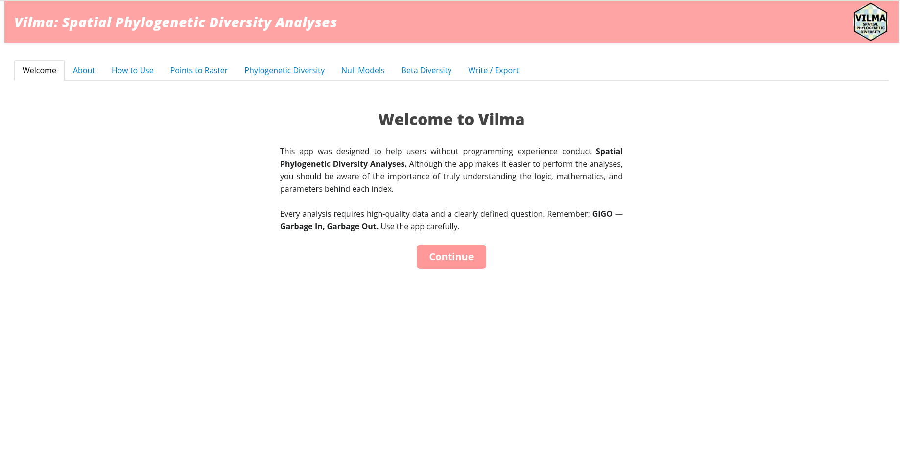
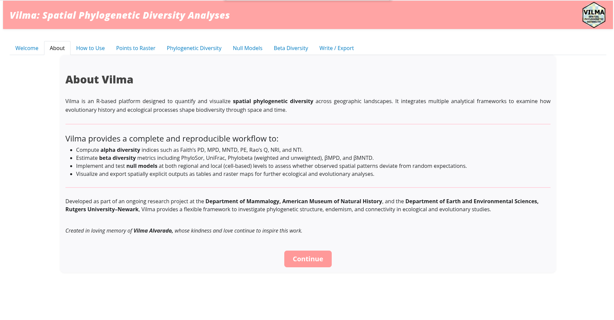
3. How to use vilma
This is the last introductory page in the app. The How to Use vilma page (Fig. 2) provides a brief tutorial introducing the available indices, methods, and structure of the required input files. To continue to the next page, scroll down to the bottom of the page and click the Continue → points_to_raster button.
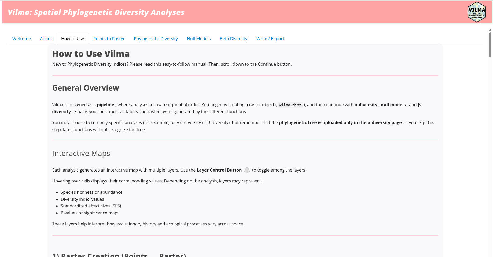
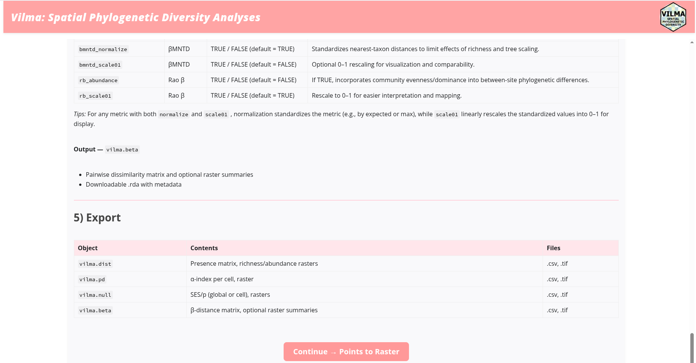
4. Points to Raster.
This is the first analysis page in the app (Fig. 3), and it
represents a basic but essential step in the workflow. On this page, you
will create the vilma.dist object, which is the main input
object used by all index functions in vilma.
To start the analysis, upload a comma-separated file containing the three required columns: Species, Longitude, and Latitude. The column names may differ, but the order must follow this structure. To upload the file, click the Browse button and select the file from your computer. Then, use the remaining input boxes to define the map projection and the raster pixel resolution. In this example, the resolution is set to 5. Finally, click the Run analysis button.
Once the analysis is complete, the resulting raster will be displayed
as an interactive map (Fig. 3), together with summary information about
the analysis. These outputs are equivalent to using
view.vilma() and print() in R, respectively.
When you are good to proceed, just click the button
Next, and if you wan to save the results, you can click
on Download results (.rda).
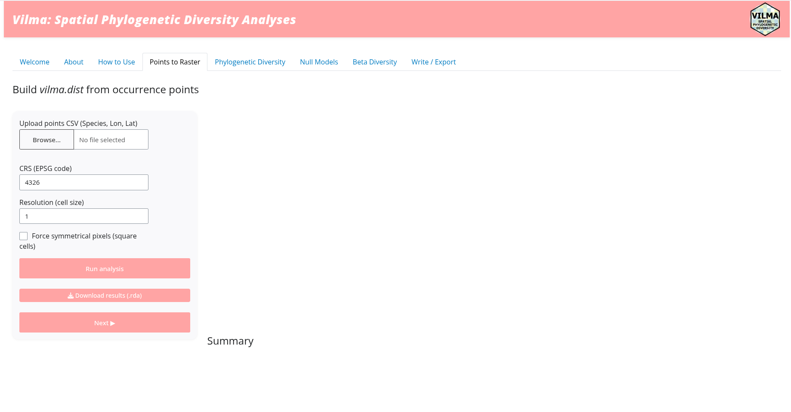
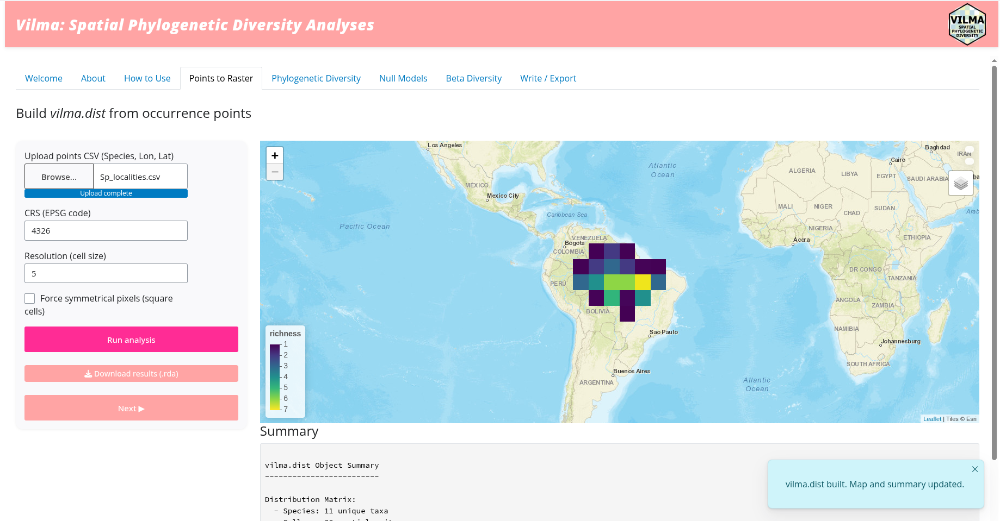
5. Phylogenetic Diversity.
After creating the vilma.dist object, the next page is
the Phylogenetic Diversity page (Fig. 4). On this page,
you can calculate one of the alpha phylogenetic diversity indices
available in vilma.
On the left panel, you will find several input boxes. First, upload the phylogenetic tree by clicking the Browse button and selecting the tree file from your computer. Then, use the index selection box to choose the alpha diversity index you want to calculate. In this example, PE (Phylogenetic Endemism) was selected.
Each time you select an index, the left panel will automatically update to show the specific options and parameters for that index. Once all inputs and parameters are ready, click the Run analysis button to start the calculation.
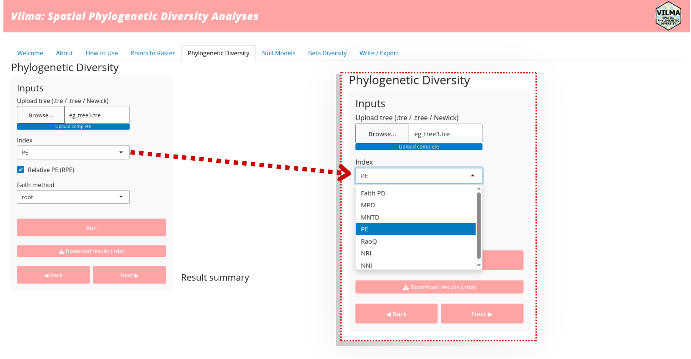
vilma.
You can see that the output is similar to the previous page, and this structure is used throughout the app. The interactive map and the summary of the results are displayed in the main panel (Fig. 5). If you change any parameter or select a different index, you must click the Run analysis button again to update the results.
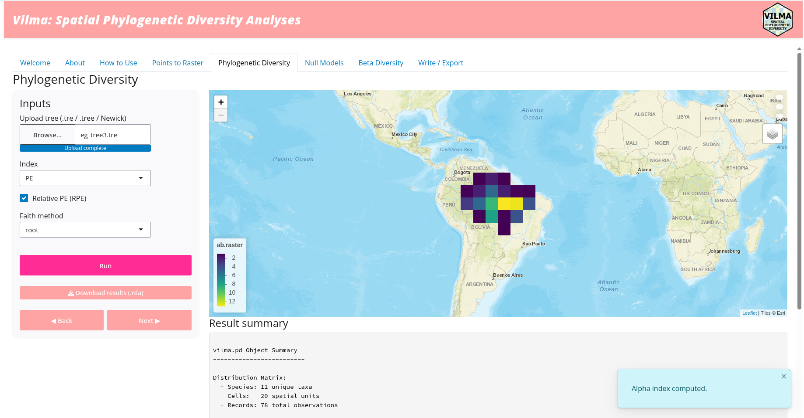
6. Null models
The Null Model page (Fig. 6)is the next step after calculating an alpha-PD index. This is a logical step because null models allow you to evaluate whether the observed phylogenetic diversity values in your data differ from random expectations. However, this analysis is optional. If you want to continue without running a null model, you can skip this step by clicking the Next button.
In the left panel, you will find the input boxes where you can set
the analysis parameters. Please note that the Index box
is fixed to the index selected on the previous page. Essentially, you
can change the number of iterations, the null-model method, either
cell or global, and the sampling method,
including taxa.label, range,
neighbor, or regional. When you select
neighbor or regional, additional input boxes
will appear for the specific parameters required by those methods.
Once all required parameters have been selected, click the Run analysis button to start the analysis.
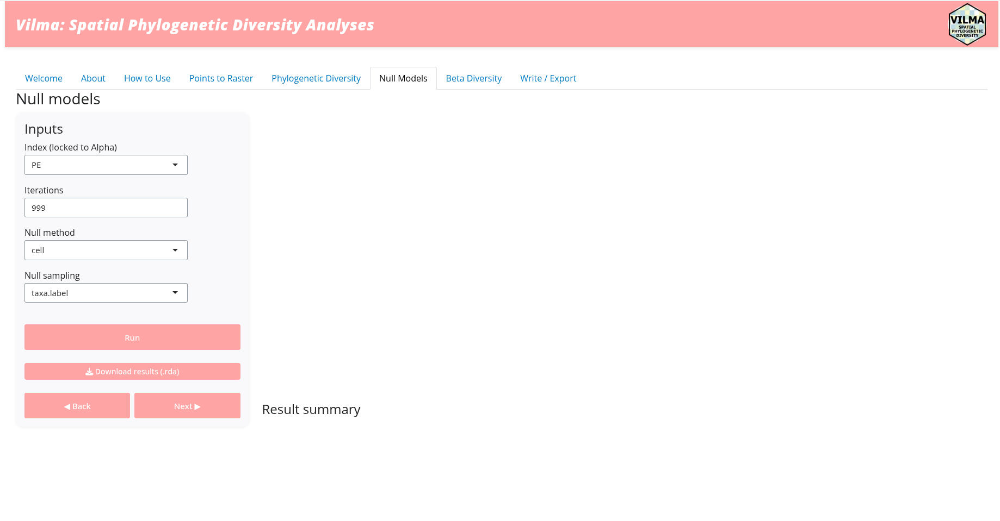
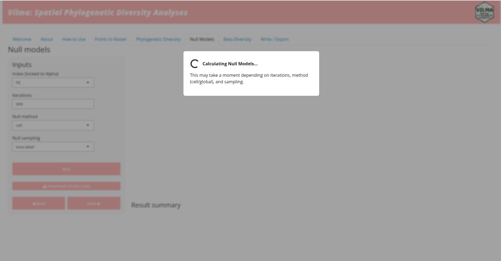
Once you click the Run analysis button, a pop-up message will appear (Fig. 6). This is a waiting message that remains visible while the analysis is running. When the analysis is complete, the app will return to the regular view and display the interactive map together with the summary results (Fig. 7).
Again, if you change any parameter of the null model, you must click the Run analysis button again to update the results. If you want to run a null model for a different index, you need to return to the previous page using the Back button, select a new alpha-PD index, run that analysis again, and then click Next to return to the Null Model page.
When you are ready with the null-model analysis, click the Next button to continue to the next page.
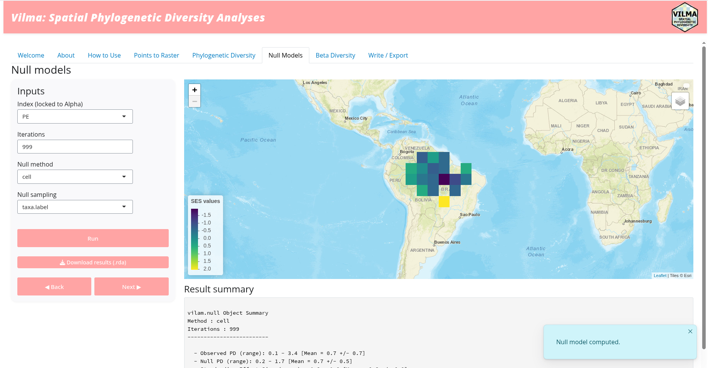
7. Beta Diversity
The Beta Diversity page follows a structure similar to the previous analysis pages (Fig. 8). In the left panel, you will find input boxes where you can select a specific beta-PD index and set the parameters required for that index. In this example, the selected index was UniFrac.
To start the calculation, click the Run analysis button. Once the results are displayed and you are ready to continue, click the Next button to move to the next page.
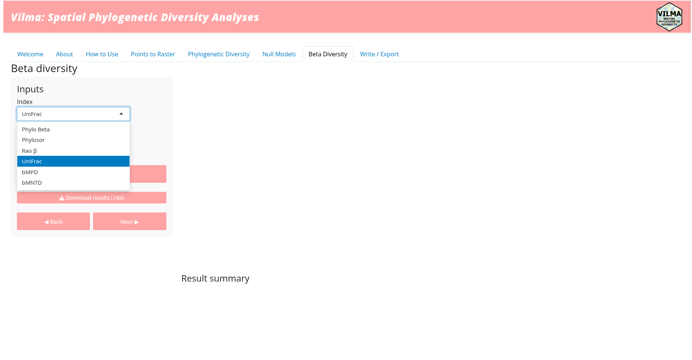
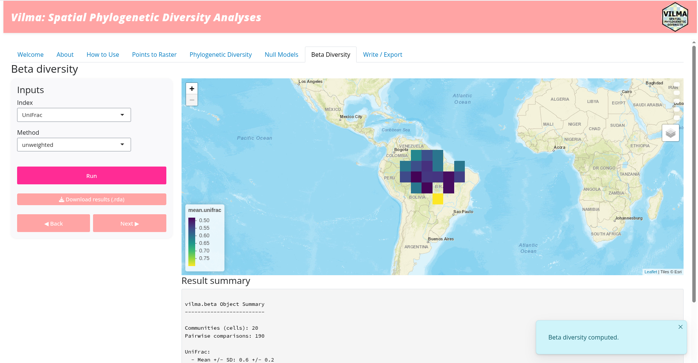
8. Write/Export
This is the last page of the app, the Write/Export
page (Fig. 9). On this page, you can manage and save the information
generated during the session. First, set the output path by selecting an
existing folder or typing the path to a new one, for example:
/Documents/Work/PD/Results. Then, click the Create
/ Check Folder button. The app will check whether the folder
already exists; if it does not, the app will create it. If everything
works correctly, a Folder ready message will appear in
the lower-left area of the page.
Next, you can select which outputs you want to save. In this example,
all available analyses were run, so all output options are available:
dist, alpha, beta, and
null. You can check or uncheck the outputs according to
your needs. You can also select the raster format for the exported
files. Once the options are ready, click the Write files to
folder button. A confirmation message will appear when the
files have been successfully saved.
Finally, you can export the R code used during the session as an R script. This option makes the workflow reproducible and allows you to share, review, or modify the analysis outside the app. To do this, click the Export session code (.R) button. After the confirmation message appears, you can close the app. .
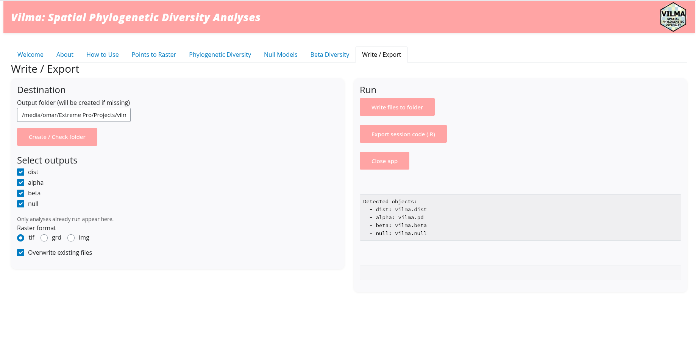
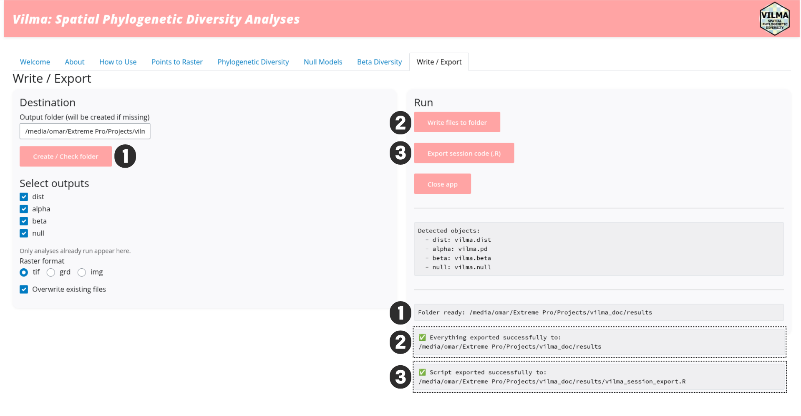
Now you can go to the selected folder and check all the files created
by the app (Fig. 10). The file names are generic but informative,
including labels such as alpha, beta, or
null, so you can identify which analysis each file belongs
to. In addition, some file names include specific terms such as
nmds or unifrac, indicating the type of output
stored in that file.
Because of this saving structure, it is recommended to save the results of different analyses in separate folders. Otherwise, files with similar names may be overwritten by the app.
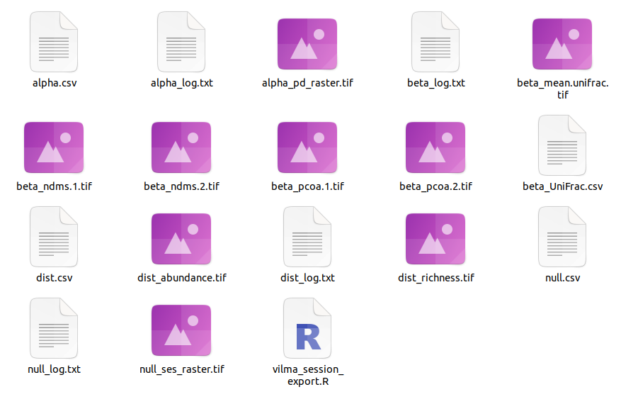
9. Final considerations
Now you have learned how to run and use the vilma Shiny
app. However, there are some important considerations to keep in mind.
First, the app is organized as a sequential, step-by-step workflow.
However, it is not mandatory to run every analysis. For example, if you
only need to calculate Beta Diversity, you can skip the
other pages by clicking the Next button.
Likewise, remember that the vilma.dist object is
required for every analysis. Therefore, you must always use the
Points to Raster page and run that analysis first. The
phylogeny, which is also required for all phylogenetic indices, is
uploaded on the Phylogenetic Diversity page. Therefore,
even if you only want to calculate beta-diversity indices, you still
need to upload the phylogeny on that page before continuing.